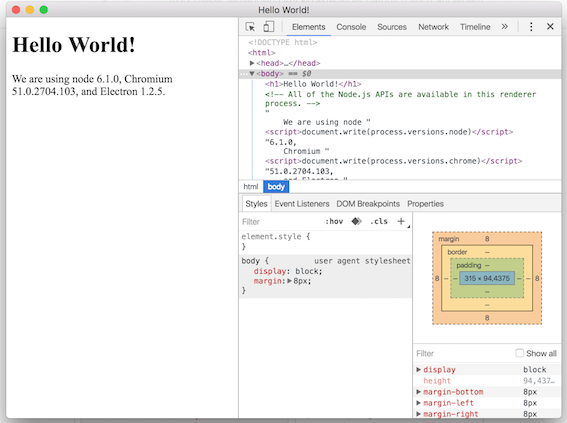
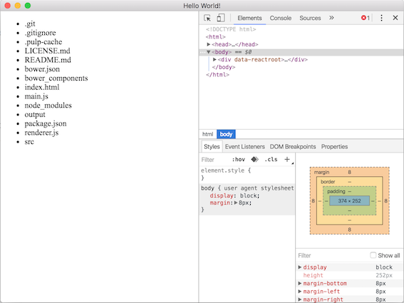

Electron Apps with PureScript
I’ve recently taken another look at the Electron Framework for building native applications using web technologies, in particular, the PureScript programming language.
To my enjoyment there has been lots of progress since I last checked and starting an Electron project with PureScript is simpler than ever. In this blogpost I’ll show you how to:
- Set up a new Electron project
- Add a little PureScript
- Freely mix Node and Browser API’s
- Add the Thermite library and build a minimal React application
Prerequisits
To follow along you’ll want to install:
- System things:
- git
- node
- Node things:
npm install -g purescript bower pulp
Setting up a new Electron Project
Following the Getting started path for Electron leads to the electron-quick-start repository. We can use it to bootstrap a new Electron project like so:
# Clone the Quick Start repository
$ git clone https://github.com/electron/electron-quick-start
# Go into the repository
$ cd electron-quick-start
# Install the dependencies and run
$ npm install && npm startThis should greet you with a simple Electron Application like so:

A few things to note right away:
- We can reload the Application using the Menu with View -> Reload
- We get to use the awesome Chrome-Dev-Tools for developing native applications
- Screw the default browser styles…
Let’s take a look at the directory structure of our project:
> ls -1
LICENSE.md
README.md
index.html
main.js
node_modules
package.json
renderer.jsPretty simple, huh? We’ve got the entry point for our application main.js, an HTML file we can load up in the window that main.js creates, and an empty JS file renderer.js that gets require’d from that HTML file.
I’ll not go into detail about any of those however, since this setup is already enough for us to…
Add a little PureScript
The usual way to start a PureScript project is pulp init, but since we’ve already done some scaffolding that won’t work this time. Instead we’ll do the few steps by hand.
We start by setting up a bower file to manage our PureScript dependencies:
$ bower initAfter confirming, or modifying some of bower’s questions we can install the purescript-console library to prepare for our Hello Electron.
$ bower install --save purescript-consoleNext up we’ll create a simple PureScript module at src/Main.purs.
module Main where
import Control.Monad.Eff.Console (log)
main = log "Hello, Electron"and compile it with
$ pulp buildBy default the PureScript compilers emits CommonJS modules into the output/ directory. If we want to run these in a browser we usually have to use a bundling tool like Webpack or psc-bundle. Luckily Electron knows how to deal with the CommonJS format and so we can just put the following line into the renderer.js file and reload our Electron application.
require('./output/Main').main()If you open the Console tab inside the Chrome Dev Tools you should be greeted with Hello, Electron. YAY!
Effects and Environments
In PureScript we use the built-in rowtypes to track the effects of our programs. A program with a signature like Eff (dom :: DOM) Unit tells us, that the program accesses the DOM (Document Object Model). It also tells us that we cannot use this program inside a node interpreter, since it relies on the DOM being present. On the other hand a signature like Eff (fs :: FS) Unit, where FS is the file system effect, tells us that this program can not be run inside the browser, as file system access is only available inside a nodejs interpreter.
So usually when we encounter a signature like Eff (fs :: FS, dom :: DOM) Unit we are looking at a useless program that can neither be run in the browser, nor inside the nodejs interpreter.1
Enter Electron
Electron’s secret sauce, is that it allows you to access both the Node and the Browser API’s in your programs at the same time. Let’s see how can we utilize these capabilities in a seamless manner with PureScript. We’re going to write a program, that reads the current directory and displays all the found files as an unordered list. Eventhough it’s totally overkill for this example we’ll be using the purescript-thermite library to render our webpage.
Thermite is a lightweight wrapper (350 lines including docstrings) around the React library. Since we’re looking to access the file system we’ll also need to install some node bindings.
$ npm install --save react react-dom
$ bower install --save purescript-thermite
$ bower install --save purescript-node-fsNext up is modifying our Main module. PureScript’s ecosystem embraces modularity, which means we have to get a few imports out of the way first.
module Main where
import Prelude
import React as R
import ReactDOM as RDOM
import Thermite as T
import Control.Monad.Eff (Eff)
import Control.Monad.Eff.Exception (try)
import DOM (DOM)
import DOM.HTML (window) as DOM
import DOM.HTML.Types (htmlDocumentToParentNode) as DOM
import DOM.HTML.Window (document) as DOM
import DOM.Node.ParentNode (querySelector) as DOM
import Data.Either (either)
import Data.Maybe (fromJust)
import Data.Nullable (toMaybe)
import Node.FS (FS)
import Node.FS.Sync (readdir)
import Partial.Unsafe (unsafePartial)
import React.DOM (text, li', ul')We’ll use React’s props mechanism to pass the list of file names to our component, so we’ll define a type for that first
type FileNames = {names :: Array String}Next up we’re defining the Spec for our directory listing component. Because we don’t support any actions, we just pass defaultPerformAction and our render function is pretty simple aswell. We use map to turn our list of names into a list of <li>’s and wrap it inside a <ul>.
dirListingComponent
:: forall eff. T.Spec eff Unit FileNames Unit
dirListingComponent =
T.simpleSpec T.defaultPerformAction render
where render _ props _ _ =
[ ul'
(map (\file -> li' [text file]) props.names)
]Last is our main function in which we first grab all the file names inside the current directory.
main :: Eff (fs :: FS, dom :: DOM) Unit
main = void do
fileNames <- either (const []) id <$> try (readdir ".")We then create a React class out of our Spec and since our component is stateless, we just pass unit as the initial state.
let component = T.createClass dirListingComponent unitNext up is some boilerplate to grab the body element of of our page. This is considered bad practice and React will warn us, but it could easily be fixed by adding a container element inside index.html and grabbing that for rendering. For the sake of this blogpost body is fine though.
document <- DOM.window >>= DOM.document
container <-
unsafePartial
(fromJust <<< toMaybe
<$> DOM.querySelector "body"
(DOM.htmlDocumentToParentNode document))Finally we tell React to render our component into the body of the webpage, and pass the file names that we grabbed earlier.
RDOM.render
(R.createFactory component {names: fileNames})
containerIf everything went well, all that’s left now, is to run pulp build and refresh our Electron application.
Tada! 
Wrapping up
I think Electron is an amazing opportunity for PureScript. It allows us to take our m browser-libraries, our n node-libraries and create n x m new libraries and applications. PureScript’s openness and good FFI story let us benefit from all the amazing work the JS community brings forth.
I was surprised at how easy it was it integrate Thermite into Electron. There is no need for a bundler at all. This is a lot different from when I last attempted to combine the two technologies and I’m super excited and motivated to continue exploring and writing native applications in PureScript.
The code for this blogpost is uploaded to Github.
Interpreting the effect system this way is also called Coeffects, since we’re specifying the capabilities an Environment needs to provide, instead of the effects our program will have on the world when run. I’d highly recommend you check out Coeffects by Thomas Petricek if you want to read more about this kind of reasoning.↩